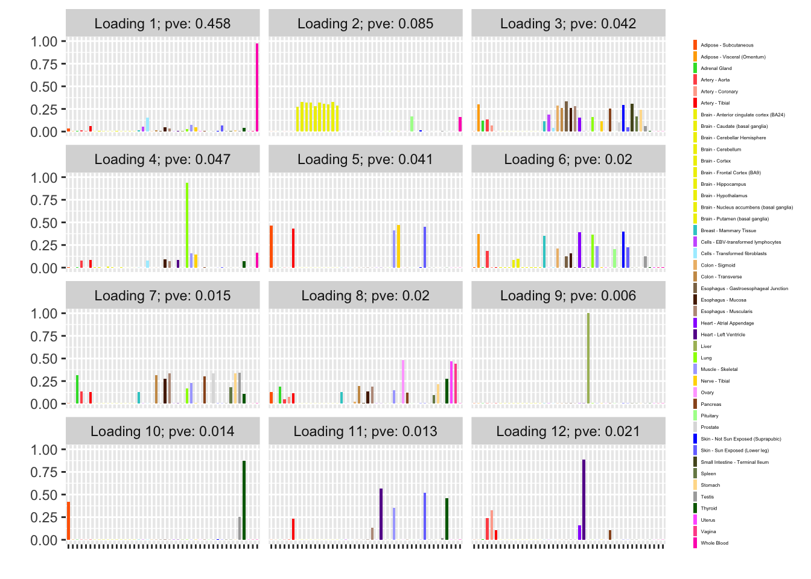
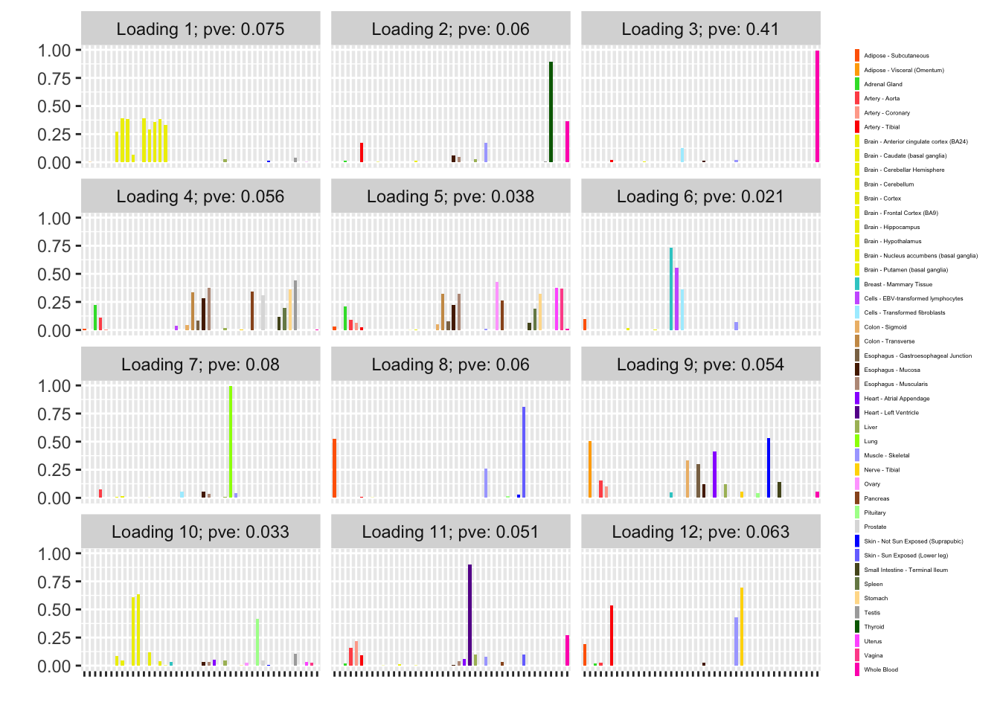

Last updated: 2018-09-11
workflowr checks: (Click a bullet for more information) ✔ R Markdown file: up-to-date
Great! Since the R Markdown file has been committed to the Git repository, you know the exact version of the code that produced these results.
✔ Environment: empty
Great job! The global environment was empty. Objects defined in the global environment can affect the analysis in your R Markdown file in unknown ways. For reproduciblity it’s best to always run the code in an empty environment.
✔ Seed:
set.seed(20180714)
The command set.seed(20180714) was run prior to running the code in the R Markdown file. Setting a seed ensures that any results that rely on randomness, e.g. subsampling or permutations, are reproducible.
✔ Session information: recorded
Great job! Recording the operating system, R version, and package versions is critical for reproducibility.
✔ Repository version: 89b711c
wflow_publish or wflow_git_commit). workflowr only checks the R Markdown file, but you know if there are other scripts or data files that it depends on. Below is the status of the Git repository when the results were generated:
Ignored files:
Ignored: .DS_Store
Ignored: .Rhistory
Ignored: .Rproj.user/
Ignored: docs/.DS_Store
Ignored: docs/figure/.DS_Store
Untracked files:
Untracked: data/greedy19.rds
| File | Version | Author | Date | Message |
|---|---|---|---|---|
| Rmd | 89b711c | Jason Willwerscheid | 2018-09-11 | wflow_publish(“analysis/nonnegative.Rmd”) |
Nonnegative matrix factorization is straightforward in FLASH; we need only put a class of nonnegative priors on the factors and loadings. In ASH, the +uniform priors constitute such a class (and, at present, this is the only such class in ASH).
As an example of nonnegative matrix factorization via FLASH, I analyze the GTEx donation matrix.
First I set up the donation matrix. As in previous analyses, I use GTEx v6 data rather than the more recent v7 data.
raw <- read.csv("https://storage.googleapis.com/gtex_analysis_v6/annotations/GTEx_Data_V6_Annotations_SampleAttributesDS.txt",
header=TRUE, sep='\t')
data <- raw[, c("SAMPID", "SMTSD")] # sample ID, tissue type
tmp <- strsplit(as.character(data$SAMPID), "-")
# Extract donor ID:
data$SAMPID <- as.factor(sapply(tmp, function(x) {x[[2]]}))
names(data) <- c("DonorID", "TissueType")
data <- suppressMessages(reshape2::acast(data, TissueType ~ DonorID))
missing.tissues <- c(1, 8, 9, 20, 21, 24, 26, 27, 33, 36, 39)
data <- data[-missing.tissues, ]
gtex.colors <- read.table("https://github.com/stephenslab/gtexresults/blob/master/data/GTExColors.txt?raw=TRUE",
sep = '\t', comment.char = '')
gtex.colors <- gtex.colors[-c(7, 8, 19, 20, 24, 25, 31, 34, 37), 2]
gtex.colors <- as.character(gtex.colors)We can likely do better than using the default SVD-type initialization. Here I use the nonnegative matrix factorization implemented in package NNLM.
udv_nn = function(Y, K = 1) {
tmp = NNLM::nnmf(Y, K, verbose = FALSE)
return(list(d = rep(1, K), u = tmp$W, v = t(tmp$H)))
}One round of greedily adding factors and then backfitting produces five factor/loading pairs, but repeated rounds yield additional factor/loadings. Here I do three rounds of fitting. I obtain the following loadings:
devtools::load_all("~/GitHub/flashr")Loading flashrdevtools::load_all("~/GitHub/ebnm")Loading ebnmebnm_fn = "ebnm_ash"
ebnm_param = list(mixcompdist = "+uniform", warmstart = TRUE)
run_flash_once <- function(f_init) {
flash(data, f_init = f_init,
ebnm_fn = ebnm_fn, ebnm_param = ebnm_param,
var_type="constant", init_fn = udv_nn,
backfit = TRUE, verbose = FALSE)
}
fl_g <- run_flash_once(f_init = NULL)Warning in REBayes::KWDual(A, rep(1, k), normalize(w), control = control): estimated mixing distribution has some negative values:
consider reducing rtolWarning in mixIP(matrix_lik = structure(c(0, 0, 0, 0, 0, 0, 0, 0, 0,
0, : Optimization step yields mixture weights that are either too small,
or negative; weights have been corrected and renormalized after the
optimization.fl_g <- run_flash_once(f_init = fl_g)Warning in verbose_obj_decrease_warning(): An iteration decreased the
objective. This happens occasionally, perhaps due to numeric reasons.
You could ignore this warning, but you might like to check out https://
github.com/stephenslab/flashr/issues/26 for more details.fl_g <- run_flash_once(f_init = fl_g)
fl_g$objective[1] -15156.65plot(fl_g, plot_loadings = TRUE, loading_colors = gtex.colors,
loading_legend_size = 4,
plot_grid_nrow = 4, plot_grid_ncol = 3)
Next I add 12 factors at once using NNLM and then backfit. Note that the objective obtained using this method is significantly better than the above.
fl_nnmf <- flash_add_factors_from_data(data, 12,
init_fn = udv_nn,
backfit = FALSE)
fl_b <- flash_backfit(data, fl_nnmf,
ebnm_fn = ebnm_fn,
ebnm_param = ebnm_param,
var_type = "constant",
verbose = FALSE)
fl_b$objective[1] -14666.36plot(fl_b, plot_loadings = TRUE, loading_colors = gtex.colors,
loading_legend_size = 4,
plot_grid_nrow = 4, plot_grid_ncol = 3)The backfitted loadings can be compared with the loadings that are obtained by simply running NNLM. Results are very similar; I’m not sure there’s much benefit to using FLASH in this case.
plot(fl_nnmf, plot_loadings=TRUE, loading_colors = gtex.colors,
loading_legend_size = 4,
plot_grid_nrow = 4, plot_grid_ncol = 3)
sessionInfo()R version 3.4.3 (2017-11-30)
Platform: x86_64-apple-darwin15.6.0 (64-bit)
Running under: macOS High Sierra 10.13.6
Matrix products: default
BLAS: /Library/Frameworks/R.framework/Versions/3.4/Resources/lib/libRblas.0.dylib
LAPACK: /Library/Frameworks/R.framework/Versions/3.4/Resources/lib/libRlapack.dylib
locale:
[1] en_US.UTF-8/en_US.UTF-8/en_US.UTF-8/C/en_US.UTF-8/en_US.UTF-8
attached base packages:
[1] stats graphics grDevices utils datasets methods base
other attached packages:
[1] ebnm_0.1-13 flashr_0.6-1
loaded via a namespace (and not attached):
[1] Rcpp_0.12.18 pillar_1.2.1 compiler_3.4.3
[4] git2r_0.21.0 plyr_1.8.4 workflowr_1.0.1
[7] R.methodsS3_1.7.1 R.utils_2.6.0 iterators_1.0.9
[10] tools_3.4.3 testthat_2.0.0 digest_0.6.15
[13] tibble_1.4.2 evaluate_0.10.1 memoise_1.1.0
[16] gtable_0.2.0 lattice_0.20-35 rlang_0.2.0
[19] Matrix_1.2-12 foreach_1.4.4 commonmark_1.4
[22] yaml_2.1.17 parallel_3.4.3 withr_2.1.1.9000
[25] stringr_1.3.0 roxygen2_6.0.1.9000 knitr_1.20
[28] xml2_1.2.0 REBayes_1.2 devtools_1.13.4
[31] rprojroot_1.3-2 grid_3.4.3 R6_2.2.2
[34] rmarkdown_1.8 reshape2_1.4.3 ggplot2_2.2.1
[37] ashr_2.2-13 magrittr_1.5 whisker_0.3-2
[40] scales_0.5.0 backports_1.1.2 codetools_0.2-15
[43] htmltools_0.3.6 MASS_7.3-48 assertthat_0.2.0
[46] softImpute_1.4 colorspace_1.3-2 labeling_0.3
[49] stringi_1.1.6 Rmosek_7.1.3 lazyeval_0.2.1
[52] munsell_0.4.3 doParallel_1.0.11 pscl_1.5.2
[55] NNLM_0.4.2 truncnorm_1.0-8 SQUAREM_2017.10-1
[58] R.oo_1.21.0 This reproducible R Markdown analysis was created with workflowr 1.0.1